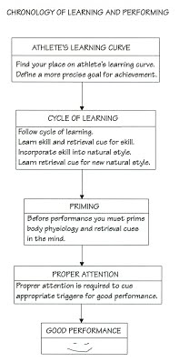
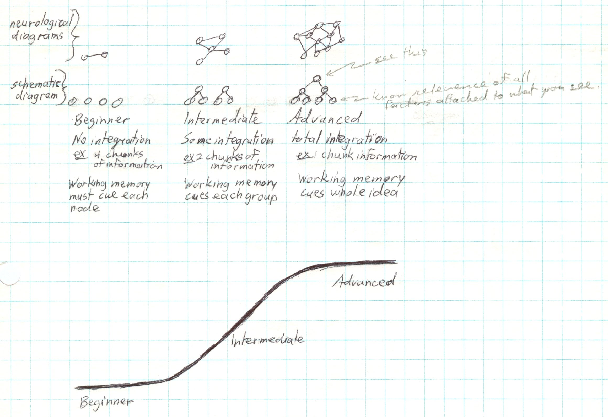
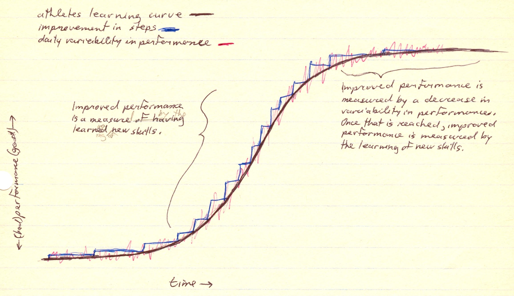
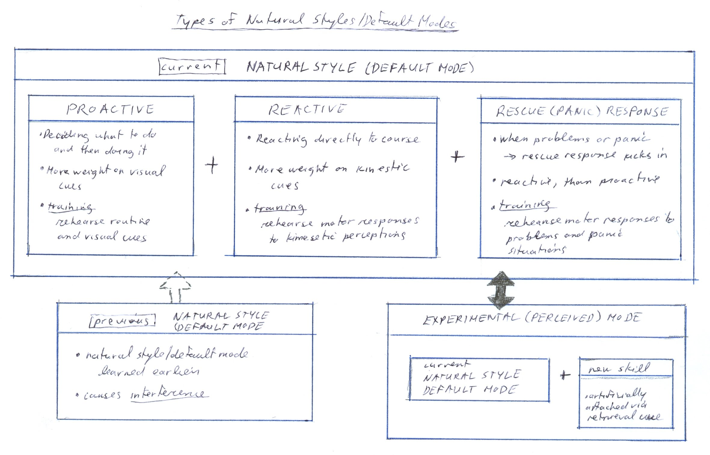
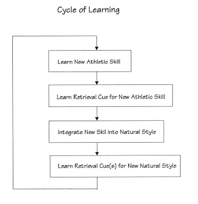
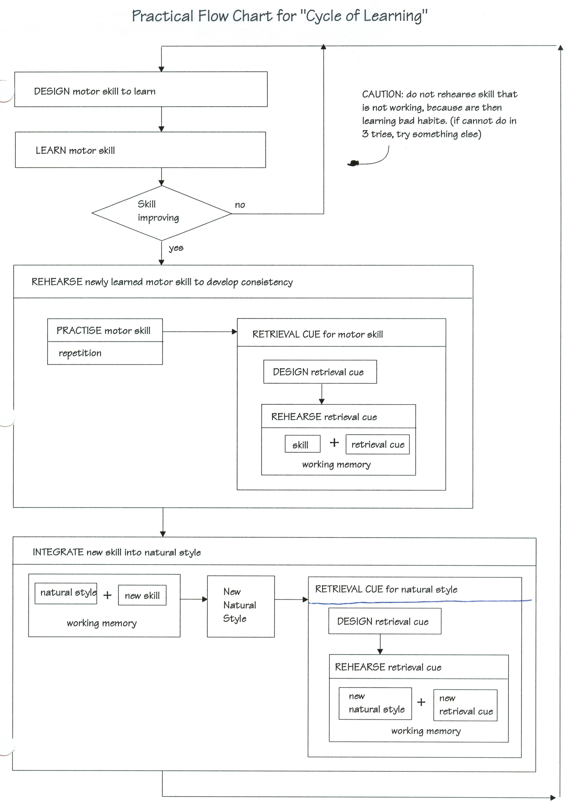

|
ch5 Self-Directed Coaching Manual
ch 5) LEARNING SPORT PROCEDURES
OVERVIEW Our main goal as athletes is to learn skills so that they can be retrieved as needed in the future. We want the process learned in practice to transfer appropriately at the tournament. This is called transfer appropriate processing (TAP). To achieve this I suggest following the “Chronology of Learning and Performing” as outlined in figure 5-1. We start by identifying where we are in abilities on the athletes learning curve. Then we can set a precise goal for improvement. Then we follow the procedures to learn the new skill. Once we have learned the new skill, we have to prepare ourselves for our performance mentally and physically. I call this priming. While we are actually doing our performance, proper attention skills are required. Figure 5-1: Chronology of Learning and Performing 
ATHLETIC DEVELOPMENT Describing Different Levels of Athletic Ability We will start this chapter by defining athletic development using the information processing model just explained in chapter 4. Let’s start by looking at figure 5-2, “Neurological Structures of Development”. Physiologically, the more integrated a neurological structure, the more we have learned a skill. For easier understanding, I use hierarchical structure to show different levels of development. At the beginner level, we learn different skills, but nothing is integrated, so a lot of mental effort is needed to do something more complex. At the intermediate level, some things are integrated. At the mastered level, a whole system of movements are integrated. One thought of a retrieval cue for that system, and the whole sequence of movements reflexively happens. Figure 5-2: Neurological Structures of Development 
Now lets consider why this happens using the components of the information processing model. At the mastered level, our sensory filter is so integrated, that one snapshot picture of the sport situation, gives all information required. Wayne Gretzky, a master of hockey, was circling the goal net with his back to the play. Once he looked back towards the play, he immediately noticed that there were too many men on the ice. He called the referee, who then counted, and then blew the whistle to stop the play. Gretzky saw play instantaneously, the referee did not. The other variable component in the information processing model is the motor response. At the mastery level, one cue from STM initiates a large integrated chunk of motor responses. When we have mastered something, it feels like “slow motion”. At the intermediate level, our sensory filter needs to do more work to get the job done. More than one picture of the sport situation is required, and more memory space is required for its integration. The motor response component of information processing model, also needs to do more things to get the same job done. More than one motor response is required and more memory space is required to integrate this information. At the intermediate level, we may feel like we are “scrambling” to get the job done. At the beginner level, nothing is integrated, so chaos results. Athlete’s Learning Curve Figure 5-3 visualizes the “Athletic Learning Curve”. Notice that it is an s-shape. At the beginner level, many small things have to be learned to notice a net effect, so improvement is slow. At the intermediate level, we are refining technique, chunking smaller learned units together. Improvement here is quick. At the highest levels, integrating larger, already complex networks, is complex, so improvement is slow. Also, notice that improvement happens in a step-like fashion. This is important for us to appreciate, so we make sure we have learned our current skill well, before attempting the next more challenging skill. I also need to point out that at different levels of ability, we measure our improved performance in different ways. Because improvement is very quick at the intermediate level, we can measure improved performance by having learned new skills. Improvement at the top level is slow, and is more a refinement of skills, than of learning new skills. So our main measure of improvement is the decrease in variability of performance. Then if a new step is reached, we can measure that as our current level of performance. This procedure is described in detail in chapter 9, “Setting New Performance Standards.” Figure 5-3: Athletic Learning Curve 
Types of Athletic Styles As we start to master a sport, we develop our own athletic style. As we advance even further to highest levels, our uniqueness is emphasized, and our ability to understand our bodies, tendencies and gait, will help us design a system that could perhaps make us the best in our discipline. We may find it helpful to create a working definition of our athletic style. In this manual, I have categorized athletic style in the following way, and in ch 9, I explain how to set new performance standards, based on these foundational working definitions. As stated earlier, athletic styles continually evolve, and are most noticeable at the mastery level. I call our current ability and gait “natural style” or “default mode”. Our default mode has 3 parts. It can be proactive or reactive. When we use our proactive mode, we decide what to do, and then do it. We are using more cognitive control in our performance, and we have more control over zen-like state. When we use our reactive mode, we are reacting to course, sporting situations. We use less cognitive control in our performance, resulting in movements that are more direct spinal and kinetic. In my working definition, when I say “default mode”, this means that the sport is being performed in expected way. There is another mode that kicks in when things go wrong. I call this the rescue response or panic response. So this kicks in when we panic. Do not confuse this with “reactive mode” where we simply react to the course with no panic. Our panic response should be pre-planned and rehearsed, just like our default mode. It may be helpful to create a “when shit happens list”. We can compile a list of saves. These are premeditated techniques that can get us back on track. If the saves won’t work, then we also have a list of falls. We premeditate where is a good place to fall, and how to fall. Once this practical list is in place, we need to get the appropriate save or fall to kick in when we panic. We do this by creating retrieval cues, described in detail in ch 8. A retrieval cue is something we attach to a save of fall. It can be a word we think, or something in the environment. So our panic response is created by learning and rehearsing strategic responses and reactions to panic events, when things go wrong. Then we attach retrieval cues to this response, which can be something we cue ourselves, or environmental cues. The last types of natural styles to consider, are previous default mode (previous natural style). This is our old style from earlier, which can interfere with our new style. Chapter 8 discusses interference. There is also a perceived new default mode which consists of our current natural style and a new skill artificially attached with a retrieval cue. This procedure is explained in chapter 9. Figure 5-4 charts the different “Types of Athletic Modes”, and their relation to each other. Figure 5-4: Types of Athletic Modes 
CYCLE OF LEARNING Now I will describe a practical method that we can use to improve our athletic abilities. Let’s start by defining the “Cycle of Learning” in 4 principle steps as shown in figure 5-5. First we learn new athletic skill. Second we learn a retrieval cue for this athletic skill. Third, we integrate this new skill into our default mode. Forth, we create new retrieval cue for our new default mode. Figure 5-5: Cycle of Learning 
The “Practical Flowchart for ‘Cycle of Learning’” in figure 5-6, diagrams these steps visually. It will be helpful to have this chart handy for the rest of this section. We start by designing motor skill to learn. We have to decide what our new athletic skill should be. We can use the physiological viewpoint described in chapter 1 to do this. Recall that we start by figuring out the physics of what we want to do, then we figure out how our bodies can do this physiologically, and then we figure out psychological cues that could assist us to achieve this. (physics <-> physiology <-> psychology). Then we attempt to learn this motor skill. A note of caution. If the skill is not learned on 3 tries, then try something else, perhaps simpler, perhaps different altogether. This is because after 3 tries, we are rehearsing bad habits. Assuming we were able to do the new skill, we are ready to rehearse it to develop consistency. We start by just repeatedly practicing the skill. Then we create a retrieval cue for this new skill. Chapter 6 explains how to design and rehearse retrieval cues. Finally, we integrate this new skill into or default mode. We do this by thinking of our natural style and new skill simultaneously, so they are both in working memory at the same time. Now that we have our new natural style, we create a new retrieval cue for our new natural style, using the same method as before. Now that we have a new ability in our default mode, we have to repeat this new ability until it becomes consistent and solid. It is only when we have a solid step, based on our own consistent performance, that we can advance to the next step. This is what I call normal training, and it is what most of training time involves. It may be helpful to consider the following sequence for normal training: First, visualize performance of skill using imagery. Then, second, focus on its execution as you would actually perform it. Then, third, practice doing the skill without analysis. Then forth, experience the feeling of flow. Then fifth, associate this feeling with a trigger word, retrieval cue, in your minds. Figure 5-6: Practical Flowchart for ‘Cycle of Learning’ 
[end of chapter 5] SDCM home |